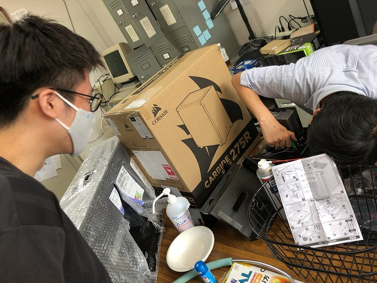

このまえと同様に流体の研究は画像処理が重たいのでB4のK野さんがPC組みました。光だけでなく流体の方も PIVはGPUが前提になってきたのでPCの理解が必要です。一緒に、N谷さんPCの中身をI田先輩PCケースに移植をB4I口さんが行っています。

ちょっとドキドキです
隣にこの前サーバ作った人が居るので大丈夫
CPUの実装がコワい
いけそう
大丈夫？
フルタワーの中身をミドルタワーへ
N谷さんケースはM1のM村さんが使います
配線の写真を撮っておく
掃除して一回ばらします
| ・ PC準備 (R02.06.22) | |||
このまえと同様に流体の研究は画像処理が重たいのでB4のK野さんがPC組みました。光だけでなく流体の方も PIVはGPUが前提になってきたのでPCの理解が必要です。一緒に、N谷さんPCの中身をI田先輩PCケースに移植をB4I口さんが行っています。 |
|||
|
ちょっとドキドキです |
隣にこの前サーバ作った人が居るので大丈夫 | ||
|
CPUの実装がコワい |
いけそう | ||
|

大丈夫？ |
フルタワーの中身をミドルタワーへ | ||
|
N谷さんケースはM1のM村さんが使います |
配線の写真を撮っておく | ||
|
掃除して一回ばらします |
|||